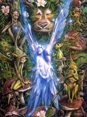

Кельтська міфологія
Колись кельти займали велику територію сучасних Франції, Бельгії, Швейцарії, частині Німеччини, Австрії, Італії, Іспанії, Угорщини та Болгарії. Однак в наші дні нащадки войовничих кельтів населяють головним чином історичну область Бретань, півострів Корнуолл, історичну провінцію Уельс, Шотландію, острів Мен та Ірландію. На рубежі нашої ери кельти представляли серйозну загрозу для Римської держави. У 385 році до нашої ери вони оволоділи Римом і нещадно розграбували місто. Це не було забуто ні Юлієм Цезарем, ні його легіонерами, які захопили між 59 і 49 роками до нашої ери кельтські землі в Галлії, які увійшли до складу Римської імперії.
Однак корінне населення продовжувало відкрито поклонятися власним богам аж до прийняття Римом християнства. Згодом вплив нової релігії відчули і острівні кельти, предки нинішніх валлійців (уельсьці) і ірландців, так і не підкорилися римлянам. Християнізація, яка зруйнувала релігійно-міфологічну цілісність язичництва багатьох народів (наприклад, слов'ян), у випадку з кельтської міфологією зіграла позитивну роль. Копітка робота християнських ченців, які взяли на себе обов'язок зібрати і записати стародавні міфи і саги зберегла для нас дивний духовний світ відважних і гарячих кельтів, які не довірили папері легенди і міфи про богів, духів, демонів і героїв, покладаючись на усні перекази і хорошу пам'ять своїх славних поетів і казок.
Поэты в Ирландии занимали особое, исключительно высокое положение в жизни общества, пожалуй, не уступавшее месту друидов, и это позволило монахам заниматься собирательством древних текстов без опасения впасть в язычество, а поэты еще долго продолжали пересказывать саги благодарным слушателям. Своеобразие кельтских мифов заключается прежде всего в том, что в них чаще всего речь идет о героях, и меньше — о богах. Идеалом островитян можно считать бесстрашного Кухулина, в одиночку защищавшего Ольстер от вторжения ратей Медб, королевы Коннахта. Кровавые сражения и поединки — главная тема кельтских мифов — могут показаться менее ужасными, если помнить о вере кельтов в реинкарнацию душ. Их загробный мир, в отличие от античного, не был мрачным обиталищем теней. Его можно назвать раем, местом отдыха душ перед возвращением в наш мир. Так поэт-воин Оисин с красавицей феей Ниам 300 лет провел в потустороннем мире, прежде чем вернулся в Ирландию. Спешившись с волшебного коня, Оисин из юноши тут же превратился в дряхлого старца. Еще одной яркой чертой кельтских мифов является любовный треугольник: чаще всего это юная прекрасная богиня, фея или дева и двое мужчин, молодой отважный воин и умудренный жизнью старик. Один из них любим, второй отвергнут, и чтобы завоевать своенравную красавицу, в ход шли оружие, сила и колдовство.
Міфологія артурівського циклу
«Явище» короля Артура, його раптове вторгнення в хід міфологічної історії, являє собою одну з численних загадок кельтської міфології. Він ніяк не згадується в жодній з «Чотирьох Гілок Мабиноги», що оповідає про клан богів древніх бриттів, порівнянних з гельської богами Туатха Де Данаан. Найбільш ранні згадки його імені в староваллійской літературі зображують його одним з військових вождів, нітрохи не краще, якщо не гірше за інших, таких, як «Герайнт, князь Девону», чиє ім'я обезсмертили і старовинні барди, і натхненне перо Теннісона. Однак незабаром після цього ми бачимо Артура піднесеним на небувалу висоту, бо він іменується королем богів, яким улесливо вшановують боги старих кланів небожителів - нащадки Дон, Лліра і Пуйла. В історії під назвою «Сон Ронабві», що входить до складу Червоної Гергестской книги, Артур постає авторитетним сюзереном, васалами якого вважаються багато персонажів, які мали за старих часів статус богів, - сини Нуаду, Лліра, Брана, Гофанона і Аранрод. В іншій історії з тієї ж Червоної книги під назвою «Куллвх і Олвен», його васалами оголошуються ще вищі божества. Так, Амаетон, син Дон, оре для нього землю, а Гофаннон, син Дон, кує залізо; двоє синів Беленуса, Нінніау і Пейбоу, «перетворені їм у биків в спокутування гріхів», упряжені в одну упряжку і зайняті тим, що порівнюють із землею гору, щоб урожай міг дозріти за один день. Саме Артур скликає витязів на пошуки «скарбів Британії», і на його поклик поспішають Манавідан, син Лліра, Гвін, син Нуаду, і Придери, син Пуйла.
Найбільш вірогідне пояснення цього феномена, як видно, полягає в тому, що в цьому образі відбилася випадкова контамінація славних діянь двох різних Артуров, що призвело до появи єдиного напівреальних і напівміфічного персонажа, що зберігає, проте, риси обох своїх прототипів. Одним з них явно був бог на ім'я Артур, шанування якого було в більшій чи меншій мірі поширене на землях кельтів, - поза всяким сумнівом, той самий Артур, якого напис ex voto, виявлена ??в руїнах на південному сході Франції, іменує Меркуріус Артайус ( Mercurius Artaius). Інший - цілком земний Артур, вождь, який носив особливий титул, який в епоху римського панування іменувався Koмec Брітаннае (Соmес Britannae). Цей «граф Британії» виконував функції верховного військового вождя. Головним його завданням було забезпечити захист країни від можливих вторгнень іноземців.
Після вигнання римлян бритти ще довго зберігали структуру військово-адміністративних органів, створену їх колишніми завойовниками, і цілком резонно припустити, що цей пост військового лідера в ранній валлійської літературі відповідає титулу «імператора», який з усіх знаменитих героїв міфології бриттів був прерогативою одного тільки Артура . Слава Артура короля об'єдналася зі славою Артура бога, і загальний синкретичний образ набув широкого поширення на землях, на яких вже в наш час були виявлені сліди древніх поселень бриттів у Великобританії. Це створило грунт для численних диспутів щодо місцезнаходження «Артурова володінь», а також таких міст, як легендарний Камелот, і локусів дванадцяти знаменитих битв Артура.
Переказами і історіям про Артура і його лицарів, поза всяким сумнівом, властивий справжній історичний колорит, але вони мають і настільки ж безперечно міфічний характер, як і історії про їх кельтських колег - богатирів Червоної Гілки Ольстера і горезвісних фианах. З цих двох циклів до кола артуровскіх легенд найбільш близький останній.
Ранг короля Артура в якості верховного військового вождя Британії являє собою досить показову паралель ролі Фінна як ватажка «місцевого ірландського ополчення». А знамениті артуровские лицарі Круглого столу вельми і вельми нагадують фианов з оточення Фінна, так і тих, хто шукає всіляких пригод. І ті й інші з рівним успіхом вступають в бій як з людьми, так і з надприродними істотами. Обидва здійснюють набіги на землі Європи, аж до самих стін Риму. Перипетії любовної інтриги Артура, його дружини Гвіневри і племінника Мордреда в деяких відносинах нагадують історію Фінна, його дружини Грайне і племінника Діармайда.
В описах останніх битв Артура і фианов відчувається подих глибокої архаїки первісних міфів, хоча їх реальний зміст дещо відрізняється. У битві при Камлуане в останньому поєдинку сходяться Артур і Мордред, а в останньому бою фианов при Габре початкові протагоністи мимоволі змушені поступитися місцем своїм нащадкам і васалам. Справа в тому, що сам Фінн і Кормак вже встигли загинути, і замість них борються Оскар, онук ФІАНа, і Кейрбр, син Кормака, які вражають один одного і теж вмирають. І, подібно до того, як Артур, на думку багатьох і багатьох його прихильників, насправді не загинув, а просто зник в «острівній долині Аваллон», шотландська легенда оповідає про те, як через багато століть після земного життя фианов якийсь мандрівник, випадково опинився на таємничому західному острові, зустрічає там Фінна Маккула і навіть розмовляє з ним.
Інша версія легенди, яка змушує Артура і його лицарів перебувати під землею, будучи зануреними в магічний сон, чекаючи майбутнього повернення в земний світ в славі і могутності, прямо перегукується з аналогічною легендою про фианах.
У пізній кельтській міфології величезна роль відводиться християнству. Найяскравіший приклад цього - пошуки святого Грааля. Нагадує кельтські чудові котли (невичерпний казан достатку верховного бога Дагда; котли, які повертають до життя воїнів; котли мудрості) - цей священний посудину служив чашею в день Таємної вечері, потім в нього була зібрана кров розп'ятого Христа, що ринула з його рани. Грааль привіз до Британії Йосип Аримафейський, пізніше реліквія зникла і її пошукам присвятили життя багато героїв знаменитого циклу міфів про лицарів короля Артура: Ланселот, Персіваль, Гавейн, Борс, Галахад і інші. Могутній Артур, государ королівства Логрес, володар меча Екскалібура, "разючого залізо і камінь", довгі роки справедливо правил своїм народом, однак битва короля з віроломним племінником сером Мордредом поклала край британському лицарства і братерства Круглого столу. В живих не залишилося майже нікого, а смертельно поранений король поплив на таємничому кораблі на острів Аваллон, загадковий потойбічний світ кельтів.